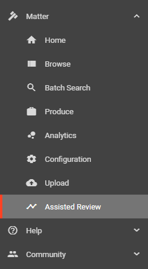
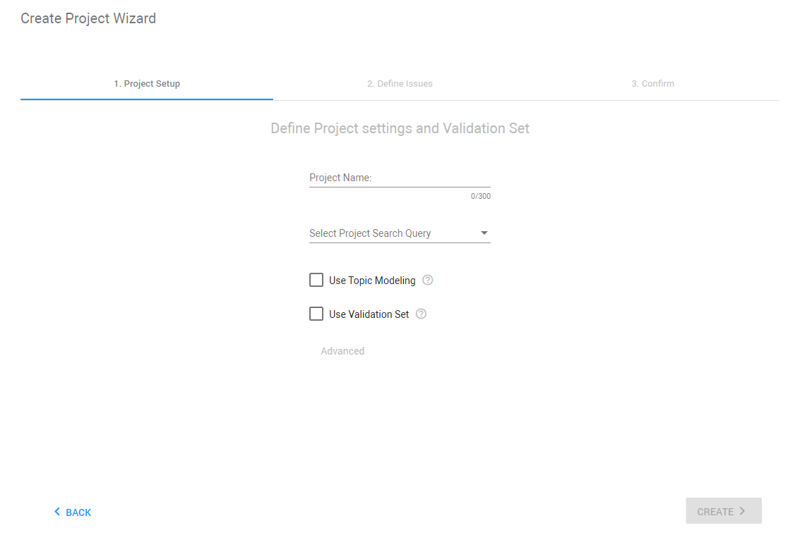
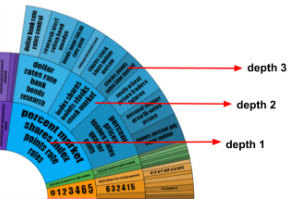

In the navigation panel of ZyLAB One, select Assisted Review.

Select + Add Project. The Create Project Wizard opens.
|
|
Note: When other projects have been created already, select |
 and then select + Add Project.
and then select + Add Project.Define the Project Settings.

-
Define a Project Name.
-
Select Project Search Query. Options include:
-
All Documents: Expand the scope to include all documents from your matter.
-
Saved Searches: Select a Saved Search to focus the assisted review to include only documents associated with this search.

-
-
If desired, select Topic Modeling. Topic modeling is useful to discover clusters of words (topics) that frequently occur together, which help to identify patterns. Topics are the most important words spread among the documents in a project.
For more information, see
-
If desired, select Use Validation Set. You can create a Validation Set or Test Set to determine how well the classifier performs.
For more information, see
-
Configure advanced settings.

Note: If you selected Topic Modeling and/or Validation Set, you can view/adjust those Advanced Settings tabs. Otherwise, you can only view/adjust the Term Filtering tab.
-
Determine the number of terms (dimensions) for the tf-idf vectors that are used for classification.
-
Maximum Number of Documents per Term
Default: 100% of the total number of documents in the project
Maximum document frequency for a term (number of documents the term occurs in). Terms with a document frequency higher than this value will be excluded for the creation of tf-idf vectors.
-
Minimum Number of Documents per Term
Default: 2
Minimum document frequency for a term. Terms with a document frequency lower than this value will be excluded for the creation of tf-idf vectors. Default setting is 2, because terms that occur in only 1 document do not add information that can be used to classify other documents.
-
Top Number of Terms
Default: 2.000.000
Number of terms that will be used in document vectors.
Ranking is based on inverse document frequency: terms with a lower document frequency will be ranked higher.
-
Regular Expression to Filter Terms
Default: ^.{0,3}$|^.{20,}$|^(image|de|het|the|and|or|een)$|^(\d|\W|_)*$|^[^a-z].*[^a-z]$|^(_|-|\.|\\|\/).*$|^.*(_|\.|\:|\;).*$
Terms that match the provided regular expression will be excluded for the creation of tf-idf vectors.
-
-
Discover clusters of words that frequently occur together to identify patterns.
-
Maximum Depth
Default: 3
The first discovered topics are at depth 1, child topics are at depth 2 and further. When the maximum depth is reached, no further calculations are performed. Calculations can already stop before that (for example, when child topics of the current level are too similar). In the example below, the maximum depth was set to 3. Calculation for the purple subtree was stopped at depth 2 and will not be processed any deeper.

-
Number of Child Topics at Root Node
Default: 20
The number of topics at depth 1. In the example above, this value is set to 5 topics.
-
Number of Child Topics at Node
Default: 3
The number of topics at any depth > 1. In the example above, this value is set to 3 topics.
-
Top Number of Documents
Default: 100% of the total number of documents in the project
The number of documents used in the calculation of the topic modeling. The documents are ranked based on their content value from high to low. Only the top documents with the highest content value are used for the topic modeling (content value of the document is the euclidean norm of the tf-idf vector before normalization: square root of sum of squares of tf-idf values).
-
Top Number of Terms
Default: 250.000
Number of terms that will be used for Topic Modeling.
Add additional filtering to the Top number of terms defined in the Term Filtering tab. This can be done if the value for this setting is lower than the number of dimensions in the tf-idf vector. The ranking of the terms is based on the sum of tf-idf values for a term in all documents.
Ranking is based on inverse document frequency: terms with a lower document frequency will be ranked higher.
-
-
-
Maximum Size for Validation Set
Default: 1% of the total number of documents in the project
Size of the random sample in number of documents.
-
Recall Goal
Default: 80% recall
Define the stop condition for each issue in this project. When this goal is reached, the remaining documents can be classified by the system.
-
-
When all options have been configured, click Create.
The Define Issues step opens. If needed, define one or more issues.

|
|
Note: Issues may also be created at a later time. See |
Click Next.
Review the project summary and click the Start Project button.
The classification process will be started. The progress can be viewed in the Assisted Review Progress tab.